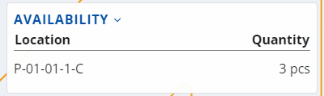

Lines execution
The order line execution starts when you press the Execute button in the lines list or when you scan a code and a matching line is found.
Before you begin, make sure you are familiaized with the scanning process first.
Once the execution begins, it guides you through several screens.
Location
The option to scan the location of the product will appear first.
There is already a suggested location that can be used if needed. Click the Use button to apply it:

Availability
This screen is a reference through which the quantity of the product can be checked at different locations.
It is used when the product has a lot. Click to expand and see the availability for the specific product:

Then, click the desired location to make the selection.
LUN
To be updated.
Product
After selecting the location, a field for confirming the scanning of the product will appear.
You can use the product suggested by the system by clicking the Use button.
The system allows for the product to be replaced, if needed. Even if the product is not replaced, it still needs to be scanned.

Variant
To be updated.
Lot
If the product has a lot, the system will ask you to enter it.
There could be a suggestion again. However, if it does not have a barcode, it can be entered manually as long as it already exists in the system. You can check the Availability section as well, if needed.

Serial
Depending on the product, you might be asked for its serial number, with or without a suggested value, and with the Availability section again:

Once the serial number is selected, there is no need to fill in the Quantity field and it can be skipped.
Quantity
This screen allows employees to select the unit and quantity of the product:

You can take suggested values quickly with the help of the arrow button, or enter the quantity manually, including changing its measurement unit, if necessary.
Standard quantity
The Quantity screen includes a dedicated standard quantity value for products with variable measurement ratios.
If you modify the quantity base, the standard one will also undergo automatic recalculation. However, you cannot modify it on its own.

Info
This section summarizes your previous selections.
Destination
To be updated.
Complete
When you are done with the execution of the order, press the Complete Order button.
A pop-up window will appear asking for permission to change the status of the order to Completed.

After clicking Yes, you will be returned to the main Orders page and will be able to pick a new order to complete.
The execution of the order is reflected in the total number of orders at the bottom of the screen.